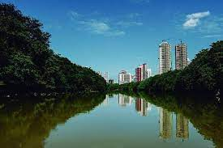
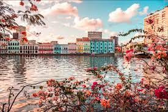
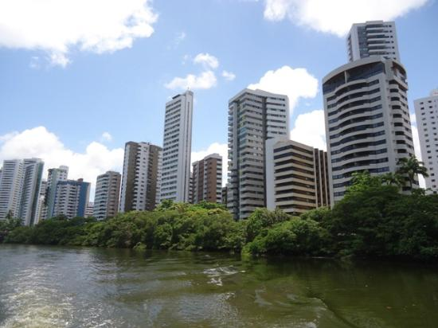

Capibaribe Trip
Among the best trips offered by Recife Rafting is the trip along the Capibaribe River.
It is our longest trip, extending over 50 of the 240 km of this river that covers the city of Recife
Passing through most of the city, the route covers historical points and incredible landscapes.

Beberibe Trip
The trip through beberibe is also long, measuring 19 km long and passing through the municipalities of
Camaragibe, Recife and ending in Olinda, providing our rafters with a visit to
Alto da Sé, one of the most famous tourist attractions in the city.

Recife Antigo Trip
The trip through Recife Antigo is not as long as the others, but it presents our
clients and rafters with a tour through the heart of Recife and its sculpture park.

Beira-Rio Trip
The trip through Beira-Rio is our trip that presents more landscapes
and a greater diversity of fauna and flora, as well as a visit to Jardim do Baobá

Parque das Graças Trip
The trip to Parque das Graças also passes through Beira-Rio, but goes a little further
and includes a visit to this brand new park, which is one of Recife's greatest attractions today.